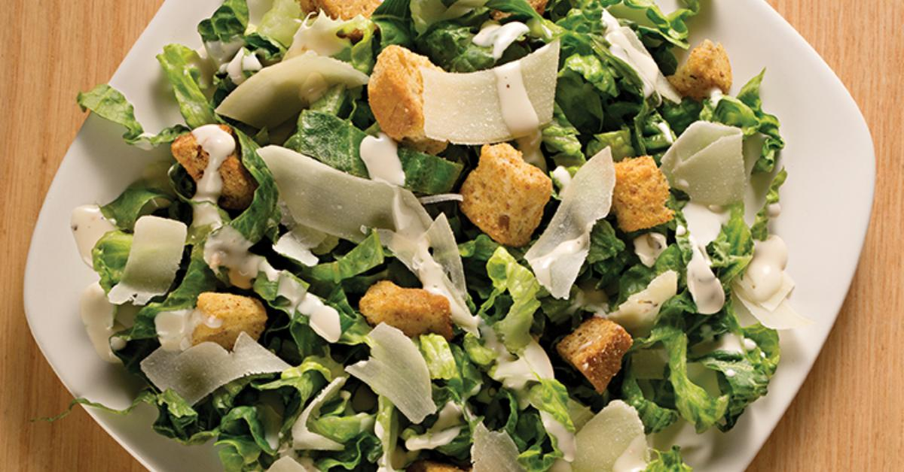

Tortilla de papas
Pasos
- Pelar y cortar 4 papas en rodajas finas.
- Freír las papas en aceite a fuego medio hasta que estén tiernas.
- Batir 6 huevos con sal, mezclar con las papas escurridas.
- Volcar en una sartén caliente y cocinar 5 minutos de cada lado hasta dorar.
Ensalada César

Pasos
- Lavar y cortar una lechuga romana en trozos grandes.
- Tostar cubos de pan con aceite de oliva hasta dorarlos.
- Mezclar la lechuga con los crutones y queso parmesano rallado.
- Aderezar con salsa César y mezclar bien antes de servir.